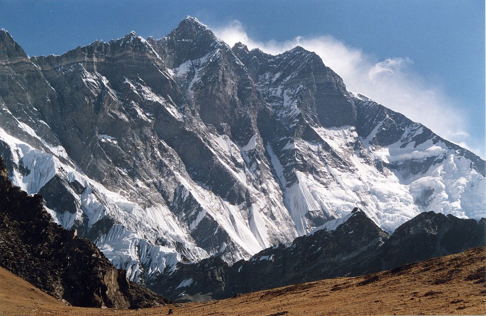

| Lhotse |
|  |
The fourth highest mountain on the planet
-
Lhotse has an elevation of 8516 m, it stands on the border between Tibet Autonomous Region of China and the Khumbu region of Nepal.
-
It is the least prominent of the eight-thousanders due to the great height of the South Col between it and Everest.
-
The main summit of Lhotse was first climbed on 18 May 1956, by the Swiss team of Ernst Reiss and Fritz Luchsinger.
-
One of the most treacherous sections of Mount Lhotse is the infamous Lhotse Face. This steep, icy slope presents a daunting challenge for even the most skilled climbers.